摘要
Abstract
摘要
Abstract
利用海表温度（SST）与海表高度（SSH）梯度观测之间的最大协方差分析构建了黑潮延伸体锋面强度指数，并利用再分析资料（1992–2011 年）给出了其正、负位相期间的大气状态合成。
An index of the Kuroshio Extension front strength is produced using a maximum covariance analysis between sea-surface temperature (SST) and sea-surface height (SSH) gradient observations, and composites of the atmospheric state are presented during its positive and negative phases using reanalysis data (1992–2011).
结果发现，当黑潮延伸体的蛇行较少（较多）、SST 锋面较强（较弱）时，瞬变涡导致的大气热输送在太平洋西部（东部）增强，这与低层斜压性增强（减弱）一致。
It is found that when the Kuroshio Extension is less (more) meandering, with a stronger (weaker) SST front, the atmospheric heat transport by transient eddies is increased in the western (eastern) Pacific region, consistent with an increase (decrease) in low-level baroclinicity.
对涡旋—平均流相互作用的分析表明，这种热输送的纬向位移会在东太平洋强迫产生异常正压流，那里阻塞频率受到强烈影响。
Analysis of the eddy–mean flow interaction shows that this zonal shift in heat transport forces anomalous barotropic flow in the Eastern Pacific, where blocking frequency is strongly influenced.
上述关系既无法与已知的北太平洋风暴路径对来自热带太平洋的远程强迫的响应相协调，也不能由海洋经由表面热通量或风对大气强迫的响应来解释。
The above relationships cannot be reconciled with the known response of the North Pacific storm track to remote forcing from the Tropical Pacific, nor can they be explained by the response of the ocean to atmospheric forcing via surface heat fluxes or winds.
相反，本文突出的风暴路径纬向位移及其伴随的大尺度环流变化，被解释为对黑潮延伸体锋面年际变率的响应。
Rather, the zonal shift in the storm track highlighted here, and the associated changes in the large-scale circulation, are interpreted as a response to the interannual variability of the Kuroshio Extension front.
1. 引言
1. Introduction
1. 引言
1. Introduction
副热带西边界流（WBC）将暖水向极地输送，并通过强烈的海气热通量与中纬度较冷的大气相互作用（例如，Kelly et al., 2010；Kwon et al., 2010）。
Subtropical western boundary currents (WBCs) transport warm water polewards which interacts with the cooler atmosphere in midlatitudes through strong air–sea heat fluxes (e.g. Kelly et al., 2010; Kwon et al., 2010).
Hoskins 和 Valdes（1990）利用定常波模型证明，这种非绝热加热在维持中纬度 WBC 上空平均斜压性极大值方面发挥重要作用；这一极大值抵消了增长中的斜压涡旋减弱经向温度梯度和低层斜压性的趋势。
Hoskins and Valdes (1990) used a stationary wave model to demonstrate that such diabatic heating plays an important role in maintaining the maximum in mean baroclinicity over the midlatitude WBCs, which counteracts the tendency of growing baroclinic eddies to reduce meridional temperature gradients and the low-level baroclinicity.
低层大气斜压性可通过斜压涡旋自身来维持，其机制是地表拖曳在强涡旋生成区域中的作用（Robinson, 2000, 2006）。
One mechanism by which the baroclinicity in the lower atmosphere can be maintained is by baroclinic eddies themselves, through the action of surface drag in regions of strong eddy generation (Robinson, 2000, 2006).
Nakamura et al.（2004）提出的另一种机制认为，跨越与 WBC 相关的海表温度（SST）陡峭梯度的差异性显热加热，会增强低对流层狭窄区域的斜压性，并有效地将上方风暴路径“锚定”。
An alternative mechanism, proposed by Nakamura et al. (2004), suggests that differential sensible heating across the sharp gradients in sea-surface temperature (SST) associated with WBCs enhances baroclinicity in narrow regions in the lower troposphere and effectively ‘anchors’ the storm track above.
这一假说已在水球（aquaplanet）框架中得到检验：既检验了 SST 梯度的适度增强（例如，Inatsu et al., 2003；Inatsu and Hoskins, 2004；Brayshaw et al., 2008），也检验了尖锐的“锋面型” SST 梯度（例如，Nakamura et al., 2008；Sampe et al., 2010），还采用区域大气模式（Taguchi et al., 2009）进行了检验；结果表明，风暴路径的位置和结构在很大程度上由中纬度是否存在 SST 梯度增强区决定，并且对其纬度高度敏感（例如，Chen et al., 2010；Ogawa et al., 2012）。
This hypothesis has been tested in an aquaplanet regime, with both modest enhancement of SST gradients (e.g. Inatsu et al., 2003; Inatsu and Hoskins, 2004; Brayshaw et al., 2008) and sharp ‘frontal’ SST gradients (e.g. Nakamura et al., 2008; Sampe et al., 2010), and with a regional atmospheric model (Taguchi et al., 2009), the results indicating that the location and structure of the storm tracks are strongly determined by the presence (or not) of regions of enhanced SST gradient in the midlatitudes, along with being highly sensitive to their latitude (e.g. Chen et al., 2010; Ogawa et al., 2012).
Hotta 和 Nakamura（2011）使用了与 Hoskins 和 Valdes 类似的定常波模型，将非绝热加热分解为感热和潜热强迫，并发现 WBC 区域中浅层的差异性显热加热对于维持近地面斜压性至关重要。
Hotta and Nakamura (2011) used a stationary wave model similar to Hoskins and Valdes, with the diabatic heating decomposed into sensible and latent forcing, and found the shallow differential sensible heating in WBC regions to be crucial in maintaining near-surface baroclinicity.
Woollings et al.（2010）通过一系列高分辨率区域大气模式试验，展示了北大西洋风暴路径对 SST 分辨率的敏感性。
The sensitivity of the North Atlantic storm track to SST resolution was demonstrated in a series of high-resolution regional atmospheric model experiments by Woollings et al. (2010).
鉴于中纬度 SST 锋面可能对决定风暴路径的性质很重要，其变率在多大程度上能够影响年际至年代际时间尺度上的大气，值得研究。
Given that midlatitude SST fronts may be important in determining the nature of the storm tracks, the extent to which their variability can influence the atmosphere on interannual to decadal time-scales warrants investigation.
Qiu 和 Chen（2005）分析了黑潮延伸体（KE）区域的海表高度（SSH）资料，表明主导变率是在稳定态与不稳定态之间的双模态年际波动：在稳定态中，海流较强且主要呈纬向；在不稳定态中，海流较弱且显著蛇行。
Qiu and Chen (2005) analysed sea-surface height (SSH) data over the Kuroshio Extension (KE) region and showed that the dominant variability is a bimodal interannual fluctuation between a stable state, in which the current is stronger and predominantly zonal, and an unstable state, in which the current is weaker and significantly meandering.
黑潮延伸体锋面（KEF；位于 KE 北缘的强 SST 锋面）强度的变率以低频波动为主，并且与 KE 的强度高度相关（Chen, 2008）。
The variability in the strength of the Kuroshio Extension Front (KEF), the strong SST front situated on the northern edge of the KE, is dominated by low-frequency fluctuations that are well correlated with the strength of the KE (Chen, 2008).
然而，关于风暴路径对 KE 波动响应的既有研究很少。
However, there are few previous studies into the storm track response to fluctuations in the KE.
Joyce et al.（2009）发现，近地面天气尺度活动的年际变率与大尺度 KEF 的小幅经向位移之间存在显著但并非完全一致的关系（KEF 定义为 200 m 深度处 14 °C 等温线的第一主成分）。
Joyce et al. (2009) found a significant but not entirely coherent relationship between the year-to-year variability of near-surface synoptic activity and small meridional shifts of the large-scale KEF (defined as the leading principle component of the 14 °C isotherm at 200 m depth).
Nakamura et al.（2012）分析了黑潮路径对日本南部冬季气旋路径的影响，显示当 SST 锋面靠近而非蛇行远离海岸时，气旋发展显著更快，并遵循更为清晰的路径。
Nakamura et al. (2012) analysed the impact of the Kuroshio path on winter cyclone tracks over the south of Japan and showed that cyclones develop significantly faster and follow a more distinct track when the SST front is close to, rather than meandering away from, the coast.
Frankignoul et al.（2011）使用月资料的滞后回归分析，研究了大气对 KE 位置经向位移的大尺度响应，并假定响应时间约为两个月。
Frankignoul et al. (2011) investigated the large-scale atmospheric response to meridional shifts in the position of the KE using lagged regression analysis of monthly data, assuming a response time of a couple of months.
主导信号是北太平洋西北部的一个弱正压高压（海平面气压量级约为 0.5 hPa），其相对于 KE 向北位移滞后 3 个月。
The dominant signal was a weak barotropic high over the northwestern North Pacific (on the order of 0.5 hPa in sea-level pressure) lagging northward shifts in the KE by 3 months.
本研究考察太平洋风暴路径、大尺度大气环流与 KEF 强度低频波动之间的关系。
In this study we investigate the relationship between the Pacific storm track, large-scale atmospheric circulation, and the low-frequency fluctuations in the strength of the KEF.
第 2 节介绍本研究所用资料。
The data used for this study are described in section 2.
第 3 节推导 KEF 指数。
An index for the KEF is derived in section 3.
第 4 节讨论观测到的大气合成。
The observed atmospheric composites are discussed in section 4.
第 5 节继而解释海洋变率对低频大气变率的强迫。
The interpretation of ocean variability forcing the low-frequency atmospheric variability follows in section 5.
第 6 节讨论观测到关系背后的机制，并给出总结性评述。
Discussion of the mechanisms behind the observed relations and summarising comments are in section 6.
2. 资料
2. Data
2. 资料
2. Data
为刻画 KEF 的变率，我们采用先进微波扫描辐射计–高级甚高分辨率辐射计（AMSR–AVHRR）最优插值日 SST 数据集（Reynolds et al., 2007）；该数据集自 2002 年 6 月起以 1/4° 格点提供。
To characterise the variability of the KEF we use the Advanced Microwave Scanning Radiometer–Advanced Very High Resolution Radiometer (AMSR–AVHRR) optimally interpolated daily SST dataset (Reynolds et al., 2007), which is provided on a 1/4° grid from June 2002.
该数据集融合了可用的红外和微波卫星资料。
This dataset blends available infrared and microwave satellite data.
由于该数据集时间较短，且 KE 与 KEF 强度相关（Chen, 2008），我们还使用 AVISO* 的 SSH 卫星高度计产品；该产品融合 TOPEX/Poseidon、Jason 和 Earth Resources Satellite 卫星任务的观测，自 1992 年 10 月起以 1/3° 日格点提供（例如，Ducet et al., 2000）。
As this is a relatively short dataset, and given the correlation between KE and KEF strength (Chen, 2008), we also use the SSH satellite altimeter product from AVISO* accessed which combines measurements from the TOPEX/Poseidon, Jason and Earth Resources Satellite missions and is available daily on a 1/3° grid from October 1992 (e.g. Ducet et al., 2000).
为分析风暴路径，我们使用 ERA-Interim 再分析资料（Berrisford et al., 2009）中的日值：温度 T、位势 Φ、比湿 q、位势高度 Z 和海平面气压（SLP）P。
To analyse the storm track we use daily values of the temperature, T, geopotential, Φ, specific humidity, q, geopotential height, Z, and sea-level pressure (SLP), P, from the ERA-Interim reanalysis dataset (Berrisford et al., 2009).
我们分析 850 hPa 层的涡旋热输送 ；其中 v 为经向速度，h 为湿静能，定义为：
We analyse the eddy heat transport, , at the 850 hPa level, where v is meridional velocity and h is the moist static energy, defined as
h = CₚT + Lᵥq + Φ。
h = CₚT + Lᵥq + Φ.
在此表达式中，Cₚ 是干空气在定压下的比热容，Lᵥ 是汽化潜热；而 中的撇号表示高频涡变量。
In this expression Cₚ is the specific heat capacity of dry air at constant pressure and Lᵥ is the latent heat of vaporisation, while the primes in denote high-frequency eddy variables.
这些变量采用 8 天高通、31 点 Lanczos 滤波器（Duchon, 1979）计算，从而有效地分离高频天气尺度斜压涡旋。
These are calculated using an 8-day high-pass 31-point Lanczos filter (Duchon, 1979) to effectively isolate the high-frequency synoptic-scale baroclinic eddies.
上的横线表示时间平均。
The overline in refers to time mean averaging.
例如，相较于位温，我们选择分析湿静能的涡旋输送，因为它与全球热收支相关（例如，Czaja and Marshall, 2006）。
We choose to analyse the eddy transport of moist static energy as opposed to potential temperature for example, because of its relevance for the global heat budget (e.g. Czaja and Marshall, 2006).
尽管如此，仅考虑温度场（即考虑 而非 ）也能很好地复现本文给出的全部结果。
Nonetheless, all results presented here were well reproduced by considering only the temperature field (i.e. considering rather than ).
大尺度大气环流异常通过移除每个格点的随季节变化均值而得到；该均值在一年中的每一天经验计算，并随后用 31 天滑动平均平滑。
The large-scale atmospheric circulation anomalies are produced by removing a seasonally varying mean at each grid point, which was computed empirically at each day of the year and then smoothed using a 31-day moving average.
*卫星海洋学资料的存档、验证与解释；http://www.aviso.oceanobs.com/en/data/products/index.html（访问于 2012 年 12 月）。
*Archiving, Validation and Interpretation of Satellite Oceanographic data; http://www.aviso.oceanobs.com/en/data/products/index.html (accessed December 2012).
3. 黑潮延伸体锋面指数
3. Kuroshio Extension Front index
3. 黑潮延伸体锋面指数
3. Kuroshio Extension Front index
为测量 SST 锋面与 KE 强度的协变性，我们首先利用卫星资料，在上游 KE 区域（图 1(a)）每个格点计算 SST 梯度模 和地转表层流速 的时间序列。
To measure the covariability of the SST fronts and the KE strength, we first use the satellite data to calculate time series of the SST gradient magnitude, , and the geostrophic surface current speed, , at each grid point over the upstream KE region (Figure 1(a)).
为生成 SST 梯度异常和地转表层流异常的时间序列，我们移除了随季节变化的均值；该均值在一年中的每一天经验计算，随后在各自资料集的全时段中采用 31 天滑动平均平滑。
To produce time series for the anomalous SST gradient and geostrophic surface current, we removed a seasonally varying mean, computed empirically at each day of the year and then smoothed using a 31-day moving average over the entire series of the respective datasets.
为计算协变性的主导型态，我们采用最大协方差分析（MCA），即对 SST 梯度异常与速度异常的协方差矩阵进行奇异值分解（例如，Bretherton et al., 1992）。
To calculate the dominant patterns of covariability, we used a maximum covariance analysis (MCA), which involves performing a singular value decomposition on the covariance matrix of the SST gradient and velocity anomalies (e.g. Bretherton et al., 1992).
该操作为两个场都产生变率型态及一个时间序列；随着模态编号增加，它们“解释”的协变性量逐渐减少。
This operation yields patterns of variability for both fields, as well as a time series, that ‘explain’ decreasing amounts of covariability with increasing mode number.
分解所得奇异值的平方与每个模态所解释协方差的平方份额成正比。
The squared singular values from the decomposition are proportional to the squared covariance fraction explained by each mode.
SST 时间序列期间 SST 梯度场与流速场之间 MCA 的结果见图 1(a)。
The results of the MCA between the SST gradient and current speed fields over the period of the SST time series are shown in Figure 1(a).
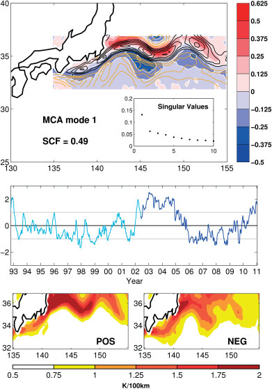
图 1. 地转表层流速与 SST 梯度的最大协方差分析第一模态
Figure 1. First MCA mode of surface geostrophic velocity and SST-gradient variability
（a）地转表层流速大小 和 SST 梯度大小 的 MCA 第一模态型态。
(a) The first mode patterns from the MCA of the surface geostrophic velocity magnitude, , and the SST gradient magnitude, .
流速型态的等值线间隔为 5 cm s⁻¹（正值为黑色，负值为黄色），SST 梯度型态以 °C (100 km)⁻¹ 为单位着色，二者各自相当于变率的一个标准差。
The velocity pattern is contoured at intervals of 5 cm s⁻¹ (positive in black, negative in yellow) and the SST gradient pattern is shaded in units of °C (100 km)⁻¹, each being equivalent to one standard deviation of the variability.
负值阴影区由白色等值线分隔。
Regions of negative shading are seperated by white contours.
图中绘出了协方差矩阵奇异值分解的前十个值，并标示了平方协方差份额（SCF）。
The first ten values from the singular value decomposition of the covariance matrix are plotted and the squared covariance fraction (SCF) is indicated.
（b）MCA 第一模态的时间序列，以一个标准差归一化；原始 MCA 时间序列为深蓝色，时间序列延伸部分（通过将速度型态投影至完整时间序列而计算）为浅蓝色。
(b) Times series of the first mode of the MCA, normalised by one standard deviation, where the original MCA time series is in dark blue and the time series extension (computed by projecting the velocity pattern onto the full time series) is in light blue.
（c）与变率正位相对应的 SST 梯度模，以 °C (100 km)⁻¹ 为单位，即（a）中型态的均值加一个标准差。
(c) The magnitude of the SST gradient, in units of °C (100 km)⁻¹, corresponding the positive phase of the variability (i.e. the mean plus one standard deviation of the pattern in (a)).
（d）与（c）相同，但对应负位相。
(d) is as (c), but for the negative phase.
本图的彩色版本可在线见于 wileyonlinelibrary.com/journal/qj。
This figure is available in colour online at wileyonlinelibrary.com/journal/qj
表层流场的变率是一个经向取向的偶极型结构（幅度约为 20 cm s⁻¹），并与 SST 梯度变率的型态（幅度约为 0.5 °C (100 km)⁻¹）高度吻合；后者相对流速场略向北偏移。
The variability in the surface current field is a meridionally orientated dipole-like pattern (of about 20 cm s⁻¹ in magnitude) and is closely matched by the pattern in the SST gradient variability (of about 0.5 °C (100 km)⁻¹ in magnitude), which is slightly offset to the north of the velocity field.
图 1(a) 所示的分解奇异值表明，第一模态相对于其他领先模态尤为主导，占平方协方差的 49%。
The singular values of the decomposition, plotted in Figure 1(a), show that the first mode is particularly dominant over the other leading modes, accounting for 49% of the squared covariance.
与主导变率模态正、负位相对应的 SST 梯度场分别见图 1(c) 和（d）。
The SST gradient fields corresponding to the positive and negative phases of the dominant mode of variability are shown in Figure 1(c) and (d) respectively.
SST 梯度变率的负异常位于平均场的最大梯度线上，因此在变率正位相，SST 型态表现为强而尖锐的梯度；而在负位相，SST 梯度则更弱、更弥散。
The negative anomaly of the SST gradient variability lies along the maximum gradient in the mean field and as such in the positive phase of the variability, the SST pattern exhibits a strong, sharp gradient, whereas in the negative phase the SST gradient is weaker and more diffuse.
图 2 进一步说明了这一型态：它展示黑潮延伸体指数正、负位相时的 SST 异常合成（按前述方法经验移除季节循环所得；图 2(a,b)），以及每个相位完整 SST 场（即异常加时间平均）的合成（图 2(c,d)）。
This pattern is further illustrated in Figure 2, which shows the composite SST anomaly (calculated by empirically removing the seasonal cycle as described before) in the positive and negative phases of the Kuroshio Extension index (Figure 2(a, b)), and also seen in the composite for the full (i.e. anomalies + time mean) SST field for each phase (Figure 2(c, d)).
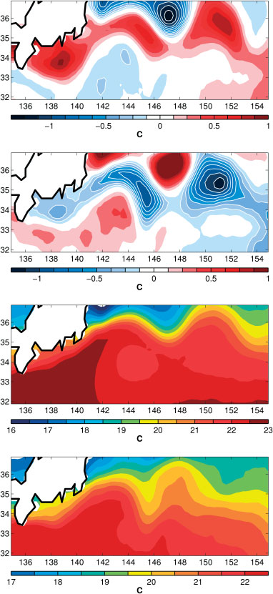
图 2. 黑潮延伸体锋面指数正、负位相的 SST 合成
Figure 2. SST composites for the positive and negative phases of the KEF index
（a）KEF 指数正位相的合成 SST 异常 ，其中 为文本所述的 SST 异常。
(a) The composite SST anomaly for the positive phase of the KEF index, , where is the SST anomaly as described in the text.
（b）KEF 指数负位相的合成 SST 异常 。
(b) The composite SST anomaly for the negative phase of the KEF index, .
（c）叠加于气候态 SST 上的 KEF 正位相合成 SST 异常 ，如文本所定义。
(c) The composite SST anomaly for the positive phase of the KEF superposed on the climatological SST, , as defined in the text.
（d）与（c）相同，但为负位相，。
(d) is as (c) but for the negative phase, .
本图的彩色版本可在线见于 wileyonlinelibrary.com/journal/qj。
This figure is available in colour online at wileyonlinelibrary.com/journal/qj
研究发现，MCA 分析结果对于分析区域的适度改变是稳健的，而 KE 的增强/减弱始终是主要特征。
The results of the MCA analysis were found to be robust to modest changes in the region of analysis, with the strengthening/weakening of the KE being the consistent dominant feature.
为评估这一 SST 变率型态对大气的热力强迫，我们采用 Objectively Analyzed Air–Sea Fluxes（OAFlux）资料集，生成了从海洋到大气的湍流热通量（即潜热通量与感热通量之和）合成；该资料集以 1° 日格点提供（Yu et al., 2008）。
To assess the thermodynamic forcing of the atmosphere by this pattern of SST variability, we produced composites of the turbulent heat flux (i.e. combined latent and sensible heat fluxes) from the ocean to the atmosphere using the Objectively Analyzed Air–Sea Fluxes (OAFlux) dataset, which is provided on a daily 1° grid (Yu et al., 2008).
图 3(a) 给出了 KE 区域湍流热通量（向上为正）的年气候态。
Figure 3(a) shows the annual climatology of the turbulent heat flux (positive upwards) in the KE region.
即使该资料集的分辨率较粗，与 KEF 相关的 SST 梯度仍清晰地反映在湍流热通量场中。
Even with the coarser resolution of the dataset, the SST gradient associated with the KEF clearly manifests itself in the turbulent heat flux field.
移除随季节变化的季节循环后（计算方法与 SST 相同），我们对 KEF 指数的正、负位相生成了合成。
After removing a seasonally varying seasonal cycle (calculated in the same way as for the SST), composites were produced for the positive and negative phases of the KEF index.
两相位之差见图 3(b)，并清楚表明 SST 梯度的增强/减弱也体现在热通量场中：在 KEF 正位相，跨 KE 轴的热通量场具有强经向梯度；而在负位相，跨 KE 的梯度减弱，这表明对上方大气的强迫存在变率（例如，Tanimoto et al., 2003；Taguchi et al., 2012）。
The difference between the two phases is shown in Figure 3(b) and clearly indicates that the strengthening/weakening of the SST gradient is also captured in the heat flux field: in the positive phase of the KEF there is a strong meridional gradient in the heat flux field across the KE axis, whereas in the negative phase the gradient is reduced across the KE, which is indicative of the variable forcing of the overlying atmosphere (e.g. Tanimoto et al., 2003; Taguchi et al., 2012).
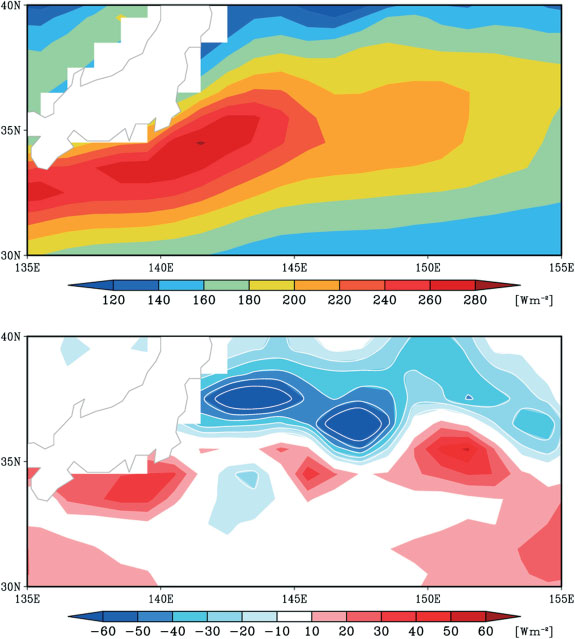
图 3. KE 区域的湍流热通量气候态及两相位异常差异
Figure 3. Turbulent heat-flux climatology and phase-composite difference in the KE region
（a）OAFlux 资料集的湍流热通量年气候态（潜热通量与感热通量之和，向上为正；见正文）。
(a) The annual climatology of turbulent heat flux (the sum of latent and sensible heat fluxes, positive upwards) from the OAFlux dataset (see text).
（b）KE 指数两个位相的合成湍流热通量异常之差（正位相减负位相）。
(b) The difference between the composite turbulent heat flux anomalies of the two phases of the KE index (positive minus negative).
单位为 W m⁻²。
Units are W m⁻².
本图的彩色版本可在线见于 wileyonlinelibrary.com/journal/qj。
This figure is available in colour online at wileyonlinelibrary.com/journal/qj
第一 MCA 模态的时间序列（图 1(b) 中黑线）以年际至年代际变率为主，这与 Chen（2008）观测到的 KEF 强度变率相似。
The time series of the first MCA mode (black line in Figure 1(b)) is dominated by interannual to decadal variability, which is similar to the variability of the KEF strength observed by Chen (2008).
MCA 分析清楚表明，低频变率与 KE 海流的状态有关：在正位相，流动更窄且更快；在负位相，流动更宽且更慢，对应于 Qiu 和 Chen（2005）所述 KE 的双模态状态。
From the MCA analysis it is clear that the low-frequency variability is related to the state of the KE current: in the positive phase the flow is narrower and faster whilst in the negative phase it is broader and slower, corresponding to the bimodal states of the KE described by Qiu and Chen (2005).
为增强随后大气状态分析的统计置信度，我们通过将异常地转流速变率的空间型态（即图 1(a) 的等值线型态）投影到地转流速异常的完整时间序列上（1992 至 2011 年），延长了这一 SSH 梯度（或地转流）变率模态的时间序列；这比融合的 AMSR–AVHRR 数据集持续时间约长 10 年（第 2 节）。
In order to enhance statistical confidence in the subsequent analysis of the atmospheric state, we have extended the time series of this mode of SSH gradient (or geostrophic current) variability by projecting the spatial pattern of the anomalous geostrophic velocity variability (i.e. the contoured pattern in Figure 1(a)) onto the full time series of the geostrophic velocity anomaly (1992 to 2011), about ten years beyond the time duration of the blended AMSR–AVHRR dataset (section 2).
所得时间序列见图 1(b)，下文用它分析 KEF 变率的大气响应。
The resulting time series is shown in Figure 1(b) and is used in the following to analyse the atmopheric response to variability of the KEF.
MCA 分析得到的异常地转流速变率空间型态与完整时间序列的第一经验正交函数（EOF）非常吻合。
The spatial pattern of the anomalous geostrophic velocity variability that emerges from the MCA analysis closely corresponds to the first empirical orthogonal function (EOF) of the full timeseries.
第一 MCA 模态和第一 EOF 的型态空间相关为 0.88；它们分别解释总地转流速方差的 10.1% 和 11.4%，而延长的 MCA 时间序列与第一 EOF 主成分时间序列之间的时间相关为 0.92。
The spatial correlation between the patterns of the first MCA mode and the first EOF, which explain 10.1% and 11.4% of the total geostrophic velocity variance respectively, is 0.88 and the temporal correlation between the extended MCA timeseries and the principal component time series of the first EOF is 0.92.
类似地，第一 MCA 模态和第一 EOF 的异常 SST 梯度模空间型态也密切相关。
Similarly, the spatial pattern of the anomalous SST gradient magnitude of the first MCA mode and the first EOF are closely related.
第一 MCA 模态和第一 EOF 的型态空间相关为 0.97；它们分别解释总 SST 梯度方差的 4.3% 和 4.5%，而延长的 MCA 时间序列与第一 EOF 主成分时间序列之间的时间相关为 0.85。
The spatial correlation between the patterns of the first MCA mode and the first EOF, which explain 4.3% and 4.5% of the total SST gradient variance respectively, is 0.97 and the temporal correlation between the extended MCA timeseries and the principal component timeseries of the first EOF is 0.85.
据此，我们采用延长的 MCA 时间序列作为 KEF 主导变率的指数。
On this basis, we proceed by using the extended MCA time series as an index of the dominant variability of the KEF.
4. 大气状态的合成分析
4. Composite analysis of the atmospheric state
4. 大气状态的合成分析
4. Composite analysis of the atmospheric state
我们选取 KE 指数（即延长的第一 MCA 模态时间序列）高于均值 1 个标准差（低于均值 1 个标准差）的日子（由图 1(b) 的水平灰线标示），构建大气状态合成以生成 KEF 变率正（负）位相的图，并计算相位合成之差（例如，）。
Composites of the atmospheric state on days when the KE index (i.e. the extended first MCA mode timeseries) is greater (lower) than (minus) one standard deviation from the mean (indicated by the horizontal grey lines in Figure 1(b)) were constructed to produce maps for the positive (negative) phases of the KEF variability and the difference between the phase composites was calculated (e.g. ).
使用 Student’s t 检验计算相位差异图的统计显著性指示；通过采用有效自由度数来计及不同资料集的持续性（例如，Trenberth, 1984），该自由度数在各自资料集的每一个格点计算。
An indication of the statistical significance for the phase difference maps was computed using a Student’s t-test, accounting for the persistence of the different datasets by using the effective number of degrees of freedom (e.g. Trenberth, 1984), calculated at each grid point in the respective datasets.
构成完整时间序列和各季节每个相位合成的日数列于表 1。
The number of days that make up each of the phase composites for the full timeseries and for each season are shown in Table 1.
表 1. 用于生成季节和全年相位合成的日数。
Table 1. Number of days used to produce the seasonal and annual phase composites.
| 位相Phase | 冬季Winter | 春季Spring | 夏季Summer | 秋季Autumn | 总计Total |
|---|---|---|---|---|---|
| 正位相Positive | 325325 | 293293 | 272272 | 396396 | 12861286 |
| 负位相Negative | 301301 | 142142 | 182182 | 327327 | 952952 |
4.1. 风暴路径
4.1. Storm track
4.1. 风暴路径
4.1. Storm track
在整个分析期内，北太平洋瞬变涡旋热输送 v′h′ 的年气候态如图4(a)所示。
The annual climatology of the heat transport by transient eddies, v′h′, for the North Pacific over the whole period of analysis is shown in Figure 4(a).
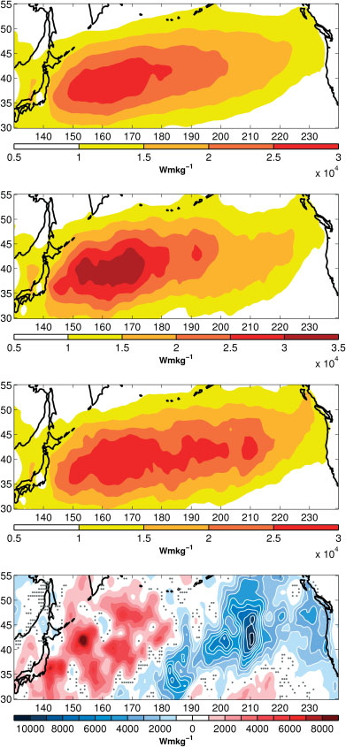
图4
Figure 4
年平均结果为：(a) 完整时间序列的涡旋热输送气候态 v′h′full；(b) KEF 指数正位相的涡旋热输送 v′h′pos；以及 (c) KEF 指数负位相的涡旋热输送 v′h′neg。
The annual averages for (a) the eddy heat transport climatology for the full time series, v′h′full, (b) the eddy heat transport for the positive phase of the KEF index, v′h′pos, and (c) the eddy heat transport for the negative phase of the KEF index, v′h′neg.
(d) 给出 KEF 指数正、负位相之间年平均涡旋热输送的差值 v′h′diff；点状阴影表示统计显著性低于 90% 的区域。
(d) shows the difference between the annually averaged eddy heat transport in the positive and negative phases of the KEF index, v′h′diff, and the stippling indicates regions where the statistical significance is less than 90%.
本图的彩色版本可在线查看：wileyonlinelibrary.com/journal/qj。
This figure is available in colour online at wileyonlinelibrary.com/journal/qj.
瞬变涡旋热输送的型态与其他关于北太平洋风暴路径的研究一致：日本下游存在显著极大值，并且风暴路径向东横跨太平洋延伸时呈西南—东北倾斜。
The pattern of heat transport by the transient eddies is consistent with other studies of the North Pacific storm track, with a strong maximum downstream of Japan and a southwest to northeast tilt as the storm track extends eastwards across the Pacific.
这体现了一个斜压波的生命周期：其增长主要发生在西太平洋、KE 附近；瞬变涡旋在更下游、热输送减弱的区域形成显著的正压分量（例如 Simmons and Hoskins, 1978）。
This represents the lifecycle of a baroclinic wave in which growth predominantly occurs over the western Pacific, in the vicinity of the KE, and the transient eddies develop a significant barotropic component further downstream where the heat transport is reduced (e.g. Simmons and Hoskins, 1978).
KEF 指数正、负位相年平均期间的涡旋热输送合成图分别见图4(b)和(c)。
Composite plots of the eddy heat transport during the annually averaged positive and negative phases of the KEF index are shown in Figure 4(b) and (c) respectively.
正位相期间，相比完整时间序列的年平均，风暴路径在西太平洋表现出更强的极大值，而东太平洋的热输送明显较弱。
During the positive phase the storm track exhibits a stronger maximum over the western Pacific compared to the annual average over the full time series, whereas the heat transport is noticeably weaker over the eastern Pacific.
KEF 指数负位相期间，西太平洋的热输送极大值略弱，但高涡旋活动区域沿纬向延伸至东太平洋；与年气候态相比，那里的热输送增加。
During the negative phase of the KEF index, the heat transport maximum in the western Pacific is slightly weaker, but the region of high eddy activity extends zonally into the eastern Pacific region, where the heat transport is increased compared to the annual climatology.
这种纬向依赖性在图4(d)所示的位相合成差异［即图4(b)减去图4(c)］中尤为突出：风暴路径呈纬向偶极型，增长中的斜压涡旋分别在正、负位相期间造成西太平洋和东太平洋更大的热输送。
This zonal dependency is particularly striking in the difference between the phase composites (i.e. Figure 4(b) minus Figure 4(c)), plotted in Figure 4(d), where the storm track exhibits a zonal dipole pattern with the growing baroclinic eddies responsible for more heat transport over the western and eastern Pacific during the positive and negative phases, respectively.
图4(d)还表明两个位相之间存在很大程度的抵消，使得整个太平洋风暴路径上的纬向平均涡旋热输送在两个位相期间基本相等。
Figure 4(d) also indicates that there is a large degree of compensation between the two phases, such that the zonally averaged eddy heat transport over the entire Pacific storm track is essentially equal during each of the phases.
KEF 指数正、负位相之间各季节的涡旋热输送差异见图5。
The difference in eddy heat transport between the positive and negative phases of the KEF index for each season is shown in Figure 5.
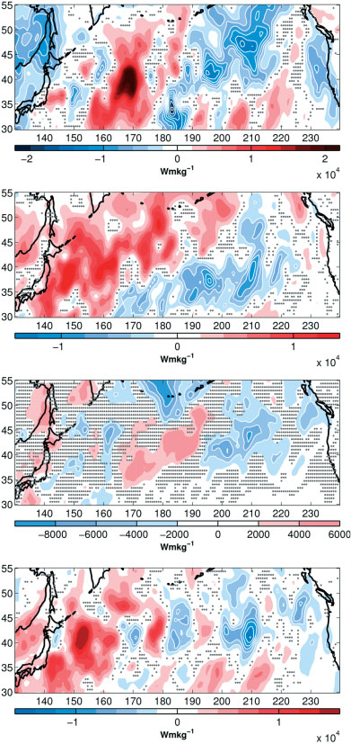
图5
Figure 5
KEF 指数正、负位相之间的涡旋热输送差 v′h′diff，分别对应：(a) 冬季（即 DJF）、(b) 春季（即 MAM）、(c) 夏季（即 JJA）和 (d) 秋季（即 SON）。
The difference between the eddy heat transport in the positive and negative phases of the KEF index, v′h′diff for: (a) winter (i.e. DJF), (b) spring (i.e. MAM), (c) summer (i.e. JJA), and (d) autumn (i.e. SON).
点状阴影表示显著性低于 90% 的区域。
The stippling indicates regions where the significance is less than 90%.
本图的彩色版本可在线查看：wileyonlinelibrary.com/journal/qj。
This figure is available in colour online at wileyonlinelibrary.com/journal/qj.
年平均合成中观察到的纬向偶极型在冬、春季得以再现，但在秋季程度较小。
The zonal dipole pattern observed in the the annual average composites is reproduced in the winter and spring but to a lesser extent in the autumn.
夏季合成很弱，没有明显的偶极信号；这是可以预期的，因为夏季风暴路径显著更弱且位于 KE 以北。
The composite in the summer is very weak and there is no obvious dipole signal, which we may expect since the storm track is significantly weaker and situated to the north of the KE in the summer.
因此，季节分析显示，太平洋风暴路径的纬向偶极型主要由冬季和春季贡献。
The seasonal analysis thus reveals that it is primarily winter and spring that contribute to the zonal dipole pattern in the Pacific storm track.
4.2. 大尺度环流
4.2. Large-scale circulation
4.2. 大尺度环流
4.2. Large-scale circulation
现在考虑海平面气压（SLP）和 500 hPa 层位势高度异常的合成。
Composites of SLP and geopotential height anomalies at the 500 hPa level are now considered.
正、负位相的 SLP 异常年平均合成分别以阴影绘于图6(a)和(b)，相应的 500 hPa 位势高度异常合成则以等值线叠加。
The annual average composites for the SLP anomalies in the positive and negative phases are shaded in Figure 6(a) and (b) respectively, with the associated 500 hPa geopotential height anomaly composites superimposed in contours.
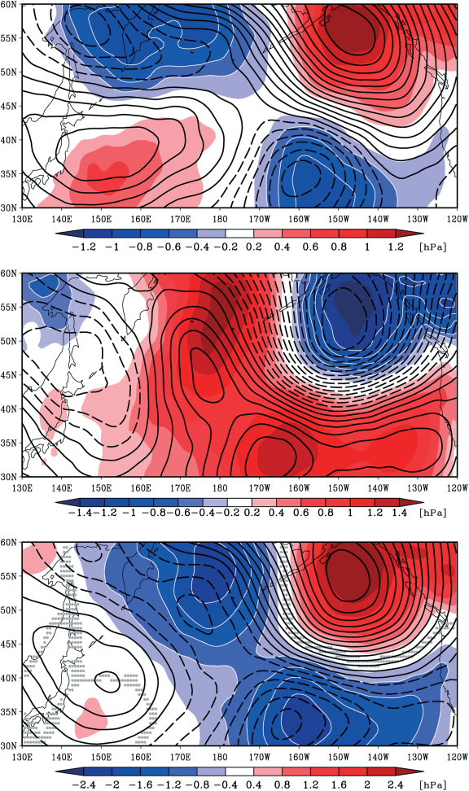
图6
Figure 6
(a) KEF 指数正位相的年平均海平面气压异常（hPa，阴影）P′pos，其中 P′ 为正文所述的海平面气压异常（点状阴影表示统计显著性低于 90% 的区域）。
(a) Annual average sea-level pressure anomaly (hPa, shading) for the positive phase of the KEF index, P′pos, where P′ is the sea-level pressure anomaly as described in the text (stippling indicates regions where the statistical significance is less than 90%).
叠加的等值线表示 KEF 指数正位相的年平均 500 hPa 位势高度异常 Z′pos，等值线间隔为 2 m［即 …, −5, −3, −1, 1, 3, 5, …］；正等值线为实线，负等值线为虚线。
Overlayed are contours showing the annual average 500 hPa geopotential height anomaly during the positive phase of the KEF index, Z′pos, with a contour interval of 2 m (i.e. . . . , −5, −3, −1, 1, 3, 5, . . . ) where positive contours are solid and negative contours are dashed.
(b) 与 (a) 相同，但对应 KEF 指数负位相。
(b) is as (a) but for the negative phase of the KEF index.
(c) 显示两个合成之间的差异 P′diff；点状阴影表示显著性低于 90%。
(c) shows the difference between the two composites, P′diff, where the stippling indicates that the significance is below 90%.
这里，Z′diff 的等值线间隔为 4 m［即 …, −10, −6, −2, 2, 6, 10, …］。
Here Z′diff is contoured with an interval of 4 m (i.e. . . . , −10, −6, −2, 2, 6, 10, . . . ).
本图的彩色版本可在线查看：wileyonlinelibrary.com/journal/qj。
This figure is available in colour online at wileyonlinelibrary.com/journal/qj.
正位相合成图［图6(a)］显示，东太平洋阿拉斯加附近存在等效正压高压异常；该高压异常位于一个较弱等效正压低压异常的北侧。
The positive composite map, Figure 6(a), indicates an equivalent barotropic high pressure anomaly over the east Pacific, in the vicinity of Alaska, located to the north of a weaker equivalent barotropic low pressure anomaly.
西太平洋还存在一个符号相反的较弱经向偶极型，其正压成分较弱，从而在正位相期间形成太平洋 SLP 场的异常四极型。
In the western Pacific there is a weaker meridional dipole, with a weaker barotropic component, of opposite sign creating an anomalous quadrupole pattern in the Pacific SLP field during the positive phase.
KEF 指数负位相的相应图见图6(b)，其中东太平洋可见一个与正位相符号相反的等效正压经向偶极结构。
The equivalent plot for the negative phase of the KEF index is shown in Figure 6(b), where an equivalent barotropic meridional dipole structure, of opposite sign to that of the positive phase, is observed in the eastern Pacific.
西太平洋区域没有相应的反向偶极结构。
In the western Pacific region there is no corresponding opposite dipole structure.
图6(c)所示的位相合成差异突出了相反的环流响应。
The composite phase difference, shown in Figure 6(c), emphasises the opposite circulation response.
差异图在东太平洋区域显示等效正压经向偶极结构，而 KE 附近的西太平洋区域没有出现清晰结构。
The difference plot shows an equivalent barotropic meridional dipole structure in the eastern Pacific region, whereas no clear structure emerges in the western Pacific region in the vicinity of the KE.
相对于平均流，这意味着 KEF 指数正位相期间东太平洋正压气流减弱，而负位相期间增强。
In relation to the mean flow, this represents a weakening of the barotropic flow in the eastern Pacific during the positive phase of the KEF index and a strengthening in the negative phase.
各季节大尺度环流的合成差异见图7。
The composite differences of the large-scale circulation for each season are shown in Figure 7.
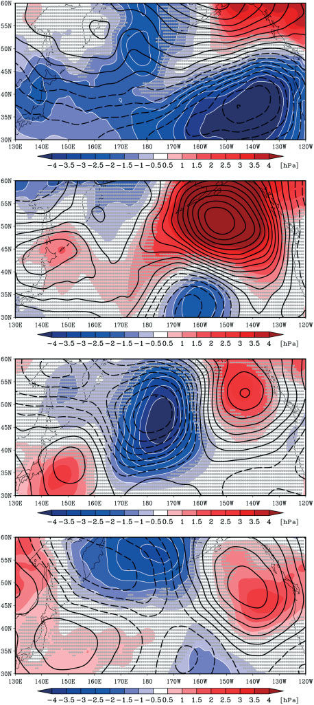
图7
Figure 7
正、负位相的两个季节合成之间的差异 P′diff（hPa，阴影；点状阴影表示显著性低于 90%），分别为：(a) 冬季（即 DJF）、(b) 春季（即 MAM）、(c) 夏季（即 JJA）和 (d) 秋季（即 SON）。
The difference (hPa, shading) between the two seasonal composites P′diff (where stippling indicates that the significance is below 90%) for: (a) winter (i.e. DJF), (b) spring (i.e. MAM), (c) summer (i.e. JJA), (d) autumn (i.e. SON).
Z′diff 的等值线间隔为 8 m［即 …, −20, −12, −4, 4, 12, 20, …］。
Z′diff is contoured with an interval of 8 m (i.e. . . . , −20, −12, −4, 4, 12, 20, . . . ).
本图的彩色版本可在线查看：wileyonlinelibrary.com/journal/qj。
This figure is available in colour online at wileyonlinelibrary.com/journal/qj.
冬季时，年平均中出现的经向等效正压偶极信号在东太平洋区域十分明显，但其中心略偏北。
In the winter, the meridional equivalent barotropic dipole signal from the annual average is evident in the eastern Pacific region albeit centred slightly further north.
春季也清晰可见偶极结构，其中心位于冬季偶极响应的南侧。
The dipolar structure is also clear in the spring, centred to the south of the winter dipole response.
秋季合成比冬季和春季更弱且噪声略大，东太平洋上空没有明显的经向正压偶极。
The composite in the autumn is weaker and somewhat noisier than the winter and spring with no obvious meridional barotropic dipole over the eastern Pacific.
同样，夏季合成较弱且噪声较大，与年平均中的型态并不相似。
Similarly, the summer composite is weak and noisy and does not resemble the pattern seen in the annual average.
值得注意的是，夏季位势高度异常较小的水平尺度与定常 Rossby 波一致，其波长正比于平均西风风速的平方根。
It is notable that the smaller horizontal scale of the geopotential height anomalies in the summer is consistent with stationary Rossby waves, whose wavelength is proportional to the square root of the mean westerly wind speed.
季节差异图揭示，年平均中东太平洋区域大尺度环流异常的经向等效正压偶极主要由冬季和春季强烈决定。
The seasonal difference plots reveal that it is the winter and spring that strongly determine the meridional equivalent barotropic dipole in the large-scale circulation anomaly over the eastern Pacific region seen in the annual mean.
4.3. 涡旋—平均流强迫
4.3. Eddy–mean flow forcing
4.3. 涡旋—平均流强迫
4.3. Eddy–mean flow forcing
现在考察东太平洋纬向正压气流的减弱与增强，是否是风暴路径纬向偶极对平均流强迫的一致表现。
We now consider whether the weakening and strengthening of the zonal barotropic flow in the eastern Pacific is a consistent manifestation of the storm track zonal dipole forcing on the mean flow.
Hoskins et al. (1983) 证明，瞬变涡旋对正压时间平均流的反馈可通过下列向量测量。
Hoskins et al. (1983) demonstrated that the feedback of transient eddies on the barotropic time-mean flow can be measured through the vector
E = (Eₓ, Eᵧ) = (v′² − u′² 的时间平均，−u′v′ 的时间平均)。
E = (Eₓ, Eᵧ) = (time average of v′² − u′², negative time average of u′v′).
撇号表示经高通滤波的涡旋分量，上划线表示时间平均。
where the primes denote high-pass-filtered eddy components and the overbar denotes time averaging.
E 向量的水平分量是涡旋各向异性的度量：其中纬向分量 Ex 衡量涡旋形状［即纬向拉长的涡旋指向西、经向拉长的涡旋指向东］，经向分量 Ey 衡量取向；E 向量的散度可加速纬向平均流。
The horizontal components of the E vector are measures of the eddy anisotropy, where the zonal component, Ex, is a measure of the eddy shape (i.e. points westwards for zonally elongated eddies and eastwards for meridionally elongated eddies), and the meridional component, Ey, is a measure of orientation, and the divergence of the E vector acts to accelerate the zonal mean flow.
鉴于这两个季节的风暴路径具有强烈纬向偶极，我们将研究范围缩小到冬季和春季。
We choose to narrow our investigation to the winter and spring in the light of the strong zonal dipole in the storm track during these seasons.
∇·E 的原始图由小尺度结构主导，因此为查明对大尺度环流的反馈，本文给出的图在每个格点均以 10° × 10° 的空间平均进行了平滑。
The raw maps of ∇ · E are dominated by small-scale structure so, to ascertain the feedback on the large-scale circulation, the maps presented here have been smoothed by plotting a 10° × 10° spatial average at each grid point.
图8(a)给出了完整时间序列中冬季和春季［即 DJFMAM］300 hPa 层 ∇·E 气候态的图。
Figure 8(a) shows a plot of the climatology of ∇ · E at the 300 hPa level during the winter and spring (i.e. DJFMAM) over the full duration of the time series.
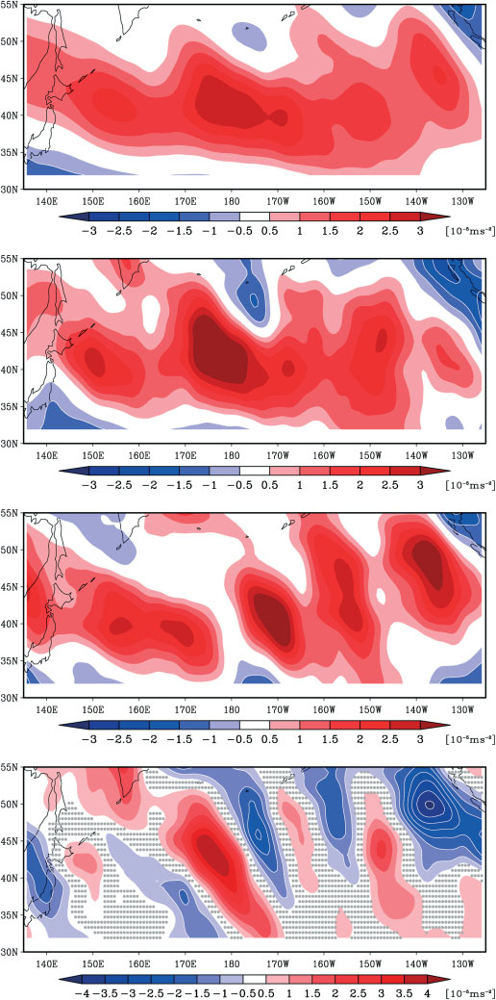
图8
Figure 8
(a) 北半球冬季和春季 300 hPa 层计算的气候态 ∇·E［数据按正文所述、在每一点以 10° × 10° 的空间平均进行了平滑］。
(a) The climatological ∇ · E calculated at 300 hPa for boreal winter and spring (the data have been smoothed using a 10° × 10° spatial average calculated at each point as described in the text).
(b) 与 (a) 相同，但对应 KEF 指数正位相。
(b) is as (a) but for the positive phase of the KEF index.
(c) 与 (a) 相同，但对应 KEF 指数负位相。
(c) is as (a) but for the negative phase of the KEF index.
(d) 显示正、负位相合成之间的差异。
(d) shows the difference between the positive and negative composites.
点状阴影表示统计显著性低于 90% 的区域。
Regions in which the statistical significance is less than 90% are indicated by stippling.
本图的彩色版本可在线查看：wileyonlinelibrary.com/journal/qj。
This figure is available in colour online at wileyonlinelibrary.com/journal/qj.
与先前研究一致，风暴路径入口区和中部的正压涡旋因增长中的斜压波而沿经向伸长，发现会产生 E 向量散度并加速正压西风气流；该加速在中纬度中太平洋达到峰值；而在风暴路径出口区和风暴路径的经向侧翼，E 向量为辐合，表明涡旋有使这些区域的西风气流减速的趋势。
As in previous studies, the meridional elongation of barotropic eddies in the entrance and middle of the Pacific storm track, due to growing baroclinic waves, is found to generate a divergence of the E vector and an acceleration of the barotropic westerly flow that peaks over the midlatitude central Pacific, whereas in the storm-track exit region and on the meridional flanks of the storm track there is convergence of the E vector, indicating a tendency for the eddies to decelerate the westerly flow in these regions.
图8(b)是 KEF 指数正位相期间 E 向量散度的合成图。
Figure 8(b) is a composite map of the E vector divergence during the positive phase of the KEF index.
E 向量散度在西太平洋区域似乎略大，其在风暴路径中心的最大散度位置比平均态［即图8(a)］略偏上游。
The E vector divergence appears slightly larger over the western Pacific region, with a maximum divergence over the centre of the storm track that is located slightly further upstream than in the mean (i.e. Figure 8(a)).
E 向量散度区域没有像平均态那样向东太平洋区域延伸得那么远。
The region of E vector divergence does not extend as far into the eastern Pacific region as in the mean.
这些观测结果反映了 KEF 指数正位相期间风暴路径在西太平洋的纬向局地化；此时 KEF 锋的 SST 梯度更强。
These observations are a reflection of the zonal localisation of the storm track in the western Pacific during the positive phase of the KEF index, when the SST gradient of the KEF front is stronger.
图8(c)所示的 KEF 负位相期间 E 向量散度在西太平洋区域减弱，反而在东太平洋区域最强，表明该区域的正压西风增强。
The E vector divergence during the negative phase of the KEF, shown in Figure 8(c), is diminished over the western Pacific region and instead is strongest over the eastern Pacific region, indicative of increased barotropic westerlies in this region.
两个位相之间的差异见图8(d)。
The difference between the two phases is shown in Figure 8(d).
KEF 指数负位相期间，东太平洋 40°N 与 50°N 之间增加的 E 向量散度，显然是涡旋热输送分析中出现的风暴路径偶极的反映。
The increased E vector divergence between 40° N and 50° N over the eastern Pacific region during the negative phase of the KEF index is evidently a reflection of the storm-track dipole that emerged from analysis of the eddy heat transport.
当 KEF 指数处于正位相、涡旋热输送主要位于西太平洋时，正压涡旋的经向伸长主要发生在风暴路径的入口区和中部。
When the eddy heat transport is predominantly over the western Pacific, during the positive phase of the KEF index, the meridional elongation of the barotropic eddies occurs primarily over the entrance and middle of the storm track.
然而，在 KEF 指数负位相期间，东太平洋的斜压波增长增加，因而发现那里的 E 向量散度增加。
However, in the negative phase of the KEF index, baroclinic wave growth increases over the eastern Pacific and, as a result, the E vector divergence is found to increase there.
因此，观测到的瞬变涡旋对东太平洋区域大尺度正压西风气流的强迫，与分别在 KEF 指数正、负位相期间观测到的正压气流减弱和增强一致。
The observed transient eddy forcing of the large-scale barotropic westerly flow over the eastern Pacific region is therefore consistent with the observed decrease and increase of the barotropic flow during the respective positive and negative phases of the KEF index.
4.4. 北太平洋阻塞
4.4. North Pacific blocking
4.4. 北太平洋阻塞
4.4. North Pacific blocking
KEF 正位相期间西部北太平洋增强的风暴路径，让人联想到 Nakamura 和 Wallace（1990）观测到的东部北太平洋阿拉斯加阻塞事件发生之前的行为。
The enhanced storm track in the western North Pacific during the positive phase of the KEF is reminiscent of the behaviour preceding the onset of an Alaskan blocking event in the eastern North Pacific, as observed by Nakamura and Wallace (1990).
他们的研究支持了 Green（1977）最先提出的观点，即斜压波活动对维持反气旋性阻塞异常很重要。
Their study supported the idea, first proposed by Green (1977), that baroclinic wave activity is important in maintaining anticyclonic blocking anomalies.
KEF 正位相中得到的 SLP 和 500 hPa 位势高度异常图［图6(a)］呈现熟悉的正压阻塞型态：高压异常位于低压异常北侧，这表明 KEF 处于正位相时阻塞气流更为常见，而负位相中相反的流型则表明阻塞较少。
The map of the SLP and 500 hPa geopotential height anomaly found in the positive phase of the KEF, in Figure 6(a), shows a familiar barotropic blocking pattern with a high pressure anomaly to the north of a low pressure anomaly, suggestive of an increase in the prevalence of blocking flows when the KEF is in the positive phase, whilst the opposite flow pattern in the negative phase is indicative of less blocking.
为检验这一假设，我们在 KEF 指数所覆盖的时期内计算了北太平洋阻塞指数，同样使用 ERA-Interim 再分析资料。
To test this hypothesis, we computed a blocking index over the North Pacific over the period of the KEF index, again using the ERA-Interim reanalysis dataset.
遵循 Barriopedro et al.（2006）的方法，我们构建了 Tibaldi 和 Molteni（1990）指数的一个改编版本。
Following the method of Barriopedro et al. (2006), we produced an adapted version of the Tibaldi and Molteni (1990) index.
在 KEF 指数的每一天、每个经度上计算两个位势高度梯度（GHGN 和 GHGS）：
Two geopotential height gradients (GHGN and GHGS) are calculated at each longitude for each day of the KEF index:
GHGN = [Z(λ, φN) − Z(λ, φ0)] / (φN − φ0)，式（2）。
GHGN = [Z(λ, φN) − Z(λ, φ0)] / (φN − φ0), equation (2).
GHGS = [Z(λ, φ0) − Z(λ, φS)] / (φ0 − φS)，式（3）。
GHGS = [Z(λ, φ0) − Z(λ, φS)] / (φ0 − φS), equation (3).
其中 φN = 77.5°N + Δ，φ0 = 60.0°N + Δ，φS = 40.0°N + Δ；Δ = −5.25°、−3.0°、0.0°、+3.0°、+5.25°。
for φN = 77.5° N + Δ, φ0 = 60.0° N + Δ, φS = 40.0° N + Δ; Δ = −5.25°, −3.0°, 0.0°, +3.0°, +5.25°.
这里，Z(λ, φ) 是经度 λ、纬度 φ 处 500 hPa 位势高度。
Here Z(λ, φ) is the 500 hPa geopotential height at longitude λ and latitude φ.
在某一经度处，若 GHGN 和 GHGS 对 Δ 的五个取值中至少一个满足以下条件，则识别为阻塞气流型态：
At a particular longitude a blocking flow configuration is identified when GHGN and GHGS satisfy the following conditions for at least one of the five values of Δ:
GHGN < −10 gpm deg⁻¹，GHGS > 0，式（4）。
GHGN < −10 gpm deg⁻¹, GHGS > 0, equation (4).
此外还要求 φ0 处的位势高度异常为正。
along with the condition that the geopotential height anomaly at φ0 must be positive.
随后对阻塞指数进行了细化，仅保留在经度上至少跨越 13.5°［两个阻塞经度之间允许有一个非阻塞经度］、且持续至少 5 天［两个阻塞日之间允许有一个非阻塞日］的阻塞特征。
The blocking index was then refined to include only blocking features that spanned at least 13.5° in longitude (allowing for one non-blocking longitude between two blocking longitudes) and were at least 5 days in duration (allowing for one non-blocking day between two blocking days).
KEF 指数完整序列中冬、春季组合［即 DJFMAM］的阻塞频率气候态，以每 6 个月的天数计，绘于图9(a)。
The climatology of the blocking frequency for the combined spring and winter (i.e DJFMAM), in days per 6 months, over the full series of the KEF index is plotted in Figure 9(a).
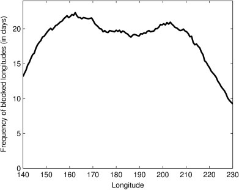
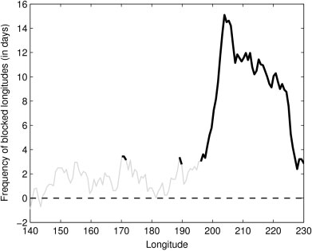
图9
Figure 9
(a) KEF 指数期间北半球冬季和春季［即 DJFMAM］的阻塞频率气候态［按正文所述的阻塞指数计算］，单位为每 6 个月的天数。
(a) Climatology of blocking frequency (calculated using the blocking index described in the text) for the boreal winter and spring (i.e. DJFMAM) over the period of the KEF index, in number of days per 6 months.
(b) KEF 指数正、负位相合成阻塞指数之间的差异；差异超过 90% 显著性处用粗线绘制。
(b) The difference between the composite blocking indices for the positive and negative phases of the KEF index, plotted in bold where the difference exceeds 90% significance.
我们再次选择聚焦于冬季和春季，此时纬向风暴路径偶极最为明显。
We again choose to focus on the spring and winter months, when the zonal storm track dipole is most apparent.
我们还计算了该指数正、负位相的合成阻塞指数，并将两者之差绘于图9(b)。
We also produced composite blocking indices for the positive and negative phases of the index and the difference between the two is plotted in Figure 9(b).
两个阻塞指数之差在 90% 水平上显著的区域，仍按前述方法使用 Student’s t 检验确定，并考虑持续性以计算有效自由度。
Regions where the difference between the two blocking indices is significant at the 90% level was determined using Student’s t-test, as before, accounting for persistence to calculate the effective number of degrees of freedom.
图8(b)表明，在 KEF 指数正位相期间、当 KE 与强 SST 锋相关联时，东部北太平洋阿拉斯加区域的阻塞显著更多。
Figure 8(b) indicates that, during the positive phase of the KEF index, when the KE is associated with a strong SST front, there is significantly more blocking over the Alaskan region of the eastern North Pacific.
Hoskins et al.（1983）和 Shutts（1986）明确证明，在阻塞事件期间，东风阻塞气流区域会出现 E 向量辐合。
Hoskins et al. (1983) and Shutts (1986) explicitly demonstrated that during the period of a blocking event there is E vector convergence across the region of the easterly blocking flow.
因此，图9(b)中两个位相之间阻塞频率的差异与第4.3节的涡旋—平均流分析一致。
As such, the difference in blocking frequency between the two phases, in Figure 9(b) is consistent with the eddy–mean flow analysis in section 4.3.
与 KEF 负位相相比，KEF 正位相中阻塞频率［从而 E 向量辐合时段］的增加，反映在东部北太平洋上空正位相相较负位相观测到的 E 向量散度减弱中［即图8］。
The increase in the blocking frequency (and hence periods of E vector convergence) in the positive phase of the KEF compared to the negative phase is reflected in the observed reduction in E vector divergence in the positive phase compared to the negative phase over the eastern North Pacific (i.e. Figure 8).
5. 将其解释为对黑潮延伸体变率的大气响应
5. Interpretation as an atmospheric response to Kuroshio Extension variability
5. 将其解释为对黑潮延伸体变率的大气响应
5. Interpretation as an atmospheric response to Kuroshio Extension variability
上述分析意味着 KE 状态与大气状态之间存在相关性，但并不必然意味着因果关系。
The analysis presented above implies correlation between the state of the KE and the state of the atmosphere but it does not necessarily imply causality.
一种思路是，鉴于太平洋海盆在年际和年代际时间尺度上表现出很大的变率［例如 Zhang et al., 1997］，可将 KE 与大气变量之间的协变性解释为受热带太平洋的远程驱动。
In one line of thought, one might interpret the covariability between KE and atmospheric variables to be driven remotely from the Tropical Pacific in view of large variability exhibited by the Pacific basin on interannual and decadal time-scales (e.g. Zhang et al., 1997).
或者，也可将第4节的结果理解为反映北太平洋上内在的海洋—大气相互作用——大气对海洋的强迫、海洋对大气的强迫，或两者兼有。
Alternatively, one might interpret the results in section 4 as reflecting intrinsic ocean–atmosphere interactions over the North Pacific –either atmospheric forcing of the ocean, oceanic forcing of the atmosphere, or both.
在本节中，我们依次讨论这些观点，并认为海洋对大气的强迫是解释第4节所述关系的关键。
In this section, we discuss in turn these views and suggest that oceanic forcing of the atmosphere is key to explaining the relationships outlined in section 4.
为分析热带太平洋强迫，我们利用 NOAA 1° × 1° 最优插值逐周 SST 数据集（Reynolds and Smith, 1994），对 KEF 指数整个时段的热带太平洋正、负位相制作了 SST 合成图（该指数经逐周平均，以匹配 SST 产品的时间分辨率）。
To analyse Tropical Pacific forcing, we produced SST composite maps for the positive and negative phases of the KEF index over the Tropical Pacific using the NOAA 1° × 1° optimally interpolated weekly SST dataset (Reynolds and Smith, 1994) for the entire length of the KEF index (which was weekly averaged to match the temporal resolution of the SST product).
在冬春月份（即 DJFMAM）KEF 指数正位相期间的 SST 异常（见图10(a)）——此时第4节发现了热输送异常的纬向偶极——由赤道中太平洋上空范围宽广、峰值约为 +0.3° K 的正异常，以及赤道东太平洋范围较窄、强度约达 −0.3° K 的负 SST 异常组成。
The SST anomaly during the positive phase of the KEF index (shown in Figure 10(a)) for the winter and spring months (i.e. DJFMAM), when the zonal dipole in heat transport anomalies was detected in section 4, consists of a broad positive anomaly over the central equatorial Pacific that peaks at about +0.3° K and a narrower region of negative SST anomaly in the eastern equatorial Pacific that reaches about −0.3° K.
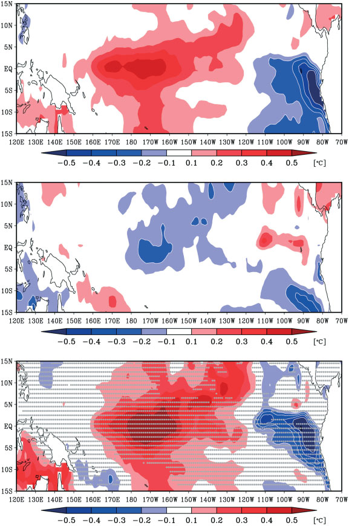
图10
Figure 10
(a) 为 KEF 指数正位相期间热带太平洋的合成 SST 异常。
(a) The composite SST anomaly in the tropical Pacific for the positive phase of the KEF index.
(b) 与 (a) 相同，但对应 KEF 指数负位相。
(b) is as (a) but for the negative phase of the KEF index.
(c) 给出两个位相合成的差值；点状阴影表示统计显著性低于 90% 的区域。
(c) shows the difference between the phase composites, and the stippling indicates regions in which the statistical significance is less than 90%.
本图的彩色版本可在线查看：wileyonlinelibrary.com/journal/qj。
This figure is available in colour online at wileyonlinelibrary.com/journal/qj.
冬春季 KEF 指数负位相的合成 SST 异常（见图10(b)）则由赤道中太平洋上空范围较窄、峰值约为 −0.3° K 的负异常构成，没有其他清晰特征。
The composite SST anomaly during the negative phase of the KEF index in the winter and spring, shown in Figure 10(b), consists of a narrow negative anomaly over the central equatorial Pacific that peaks at about −0.3° K, with no other clear features.
图10(c)绘出了两种合成的差值以及温度差统计显著性的指示；统计显著性用 Student’s t 检验计算，点状阴影表示显著性水平低于 90% 的位置。
The difference between the composites is plotted in Figure 10(c) along with an indication of the statistical significance of the temperature difference, calculated using Student’s t-test, where the stippling indicates where the significance level is less than 90%.
如图所示，几乎所有赤道 SST 异常都带有点状阴影，表明其缺乏统计显著性。
As can be seen, almost all of the equatorial SST anomalies are stippled, indicating a lack of statistical significance.
这是由于该区域 SST 异常具有很强的持续性，降低了 KEF 指数时段内的有效自由度数，同时与厄尔尼诺—南方涛动（ENSO）有关的 SST 标准差很大；在赤道太平洋大部分地区该标准差大于 1° K（例如 Deser et al., 2010）。
This is due to a combination of the strong persistence of SST anomalies in this region, which reduces the effective number of degrees of freedom during the period of the KEF index, and the large standard deviation of SST associated with the El Niño–Southern Oscillation (ENSO), which is greater than 1° K across most of the equatorial Pacific region (e.g. Deser et al., 2010).
第4节所揭示的统计关系并非由清晰 ENSO 信号主导，这一更有意义的证据或许来自于与既有 ENSO 大气响应研究的比较。
A more meaningful indication that the statistical relationships presented in section 4 are not dominated by a clear ENSO signal perhaps comes from comparison with previous studies of the atmospheric response to ENSO.
北太平洋对 ENSO 暖位相的响应中所观测到的主导定常波型，由低纬太平洋上的异常反气旋和太平洋北部区域的异常气旋性气流构成（Horel and Wallace, 1981; Trenberth et al., 1998）。
The dominant stationary wave pattern that is observed in response to the warm phase of ENSO in the North Pacific consists of an anomalous anticyclone over the Pacific at lower latitudes and anomalous cyclonic flow in the northern region of the Pacific (Horel and Wallace, 1981; Trenberth et al., 1998).
这不同于 KEF 指数正位相时的合成大尺度环流响应：后者在东北太平洋呈现高压异常，同时赤道中太平洋存在广泛暖异常。
This differs from the composite large-scale circulation response during the positive phase of the KEF index, which exhibits a high anomaly over the northeastern Pacific, during which there is a broad warm anomaly in the central equatorial Pacific.
我们 KEF 指数合成中出现的大尺度环流异常——赤道太平洋的暖／冷异常伴随其间——在性质上基本与观测到的 ENSO 环流响应相反。
The large-scale circulation anomalies that emerge in our KEF index composite, with a warm/cold anomaly in the equatorial Pacific, are essentially in the opposite sense to the observed circulation response to ENSO.
对风暴路径变化也可作同样的判断。
The same can be said for storm track changes.
厄尔尼诺期间，太平洋风暴路径向南偏移，并在更下游的东太平洋增强；这很可能是对热带增暖所造成的热带太平洋向极侧边缘大尺度斜压性增强的响应（Hoerling and Ting, 1994; Trenberth and Hurrell, 1994; Orlanski, 2005; Seager et al., 2005）。
During El Niño, the Pacific storm track is displaced southwards and strengthens further downstream over the eastern Pacific, likely in response to the enhanced large-scale baroclinicity on the poleward edge of the tropical Pacific that arises due to tropical warming (Hoerling and Ting, 1994; Trenberth and Hurrell, 1994; Orlanski, 2005; Seager et al., 2005).
在我们的 KEF 指数负位相中，当风暴路径向东延伸时，图9(b)表明赤道太平洋存在微弱冷异常。
In the negative phase of our KEF index, when the storm track is seen to extend eastwards, Figure 9(b) indicates the presence of a weak cold anomaly in the equatorial Pacific.
在 KEF 指数正位相中，赤道太平洋存在暖异常（即图9(a)），风暴路径主要局限于北太平洋西部。
During the positive phase of the KEF index, during which there is a warm anomaly in the equatorial Pacific (i.e. Figure 9(a)), the storm track is seen to be primarily localised over the western North Pacific.
因此，上述合成分析中的风暴路径变化不像是对赤道 SST 异常的大气响应。
Thus the storm track changes in the composite analysis above do not resemble an atmospheric response to an equatorial SST anomaly.
最后，关于东北太平洋阻塞频率的研究表明，ENSO 暖位相期间阻塞日数减少，而 ENSO 冷位相期间阻塞频率增加（Renwick and Wallace, 1996; Compo et al., 2001; Carrera et al., 2004）。
Finally, studies of blocking frequency over the northeastern Pacific reveal that during the warm phase of ENSO the number of blocked days decreases, whereas the blocking frequency increases during the cool phase of ENSO (Renwick and Wallace, 1996; Compo et al., 2001; Carrera et al., 2004).
这里，在 KEF 指数正位相期间我们观测到热带 SST 暖异常（即图9(a)），同时发现东北太平洋阻塞频率增加，即与厄尔尼诺时段观测到的行为相反。
Here we observe a warm tropical SST anomaly during the positive phase of our KEF index (i.e. Figure 9(a)), when we find increased blocking frequency over the northeastern Pacific, i.e. opposite to the observed behaviour during El Niño periods.
在 KEF 指数负位相中则出现相反情形：我们观测到赤道 SST 冷异常和阻塞频率降低。
The opposite occurs during the negative phase of the KEF index, where we observe a cool equatorial SST anomaly and a decrease in blocking frequency.
以上讨论清楚表明，第4节建立的统计关系不太可能由热带强迫导致。
The previous discussion makes it clear that the statistical relationships established in section 4 are unlikely to result from tropical forcing.
现在让我们把注意力转向热带外海气相互作用，首先考察海洋对局地大气强迫的响应。
Let us now turn our attention to extratropical ocean–atmosphere interactions, starting with the response of the ocean to local atmospheric forcing.
检查 KEF 指数正、负位相之间的海平面气压（SLP）合成差值（图6(c)）可见，在 SST 梯度受扰动的区域（图1(a)阴影区）上空没有显著异常。
Inspection of the composite difference for SLP between positive and negative phases of the KEF index (Figure 6(c)) shows no significant anomalies over the region where the SST gradients are perturbed (Figure 1(a), shaded).
由地转关系可知，这意味着近地面风没有显著变化；因此，它排除了通过异常 Ekman 流或风致表面热通量变化产生局地强迫的可能性。
From geostrophy, this indicates no significant changes in surface winds and, as a result, it rules out a local forcing via anomalous Ekman currents, or wind-induced changes in surface heat fluxes.
实际上，图3支持如下观点：表面热通量实际上会阻尼与 KEF 指数相关的 SST 异常。
Indeed, Figure 3 supports the view that surface heat fluxes actually damp the SST anomaly associated with the KEF index.
因此我们排除局地大气强迫，转而聚焦于作为 KEF 指数相关 SST 异常主要驱动因素的地转平流。
We thus rule out a local atmospheric forcing and focus on geostrophic advection as the main driver of the SST anomaly associated with the KEF index.
大量既有研究已充分确立，KEF 强度和位置的变化反映了风驱强迫：正值（北移和增强）由中、东太平洋反气旋性风应力旋度驱动，且存在数年的时间滞后（例如 Qiu and Chen, 2005; Sasaki et al., 2013）。
It is well established from a vast body of literature that changes in strength and location of the KEF reflect wind-driven forcing, with positive values (northward shift and intensification) being driven, with a time lag of a few years, by anticyclonic wind-stress curl in the central and eastern Pacific (e.g. Qiu and Chen, 2005; Sasaki et al., 2013).
然而，与我们的 KEF 指数在零滞后相关联的风应力旋度合成在中、东太平洋显示气旋性风应力旋度（图11(b)，红色），其 Sverdrup 响应趋于削弱黑潮（图11(b,c)）。
However the wind-stress curl composites associated with our KEF index at zero lag shows cyclonic wind-stress curl over the central and eastern Pacific (Figure 11(b), red colours), with a Sverdrup response tending to weaken the Kuroshio (Figure 11(b,c)).
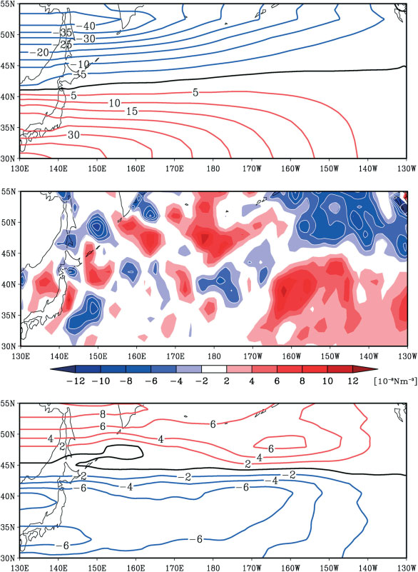
图11
Figure 11
年平均结果包括：(a) 全部资料的深度积分地转流函数 Ψ₀，以及 (b) 黑潮延伸体锋正、负位相之间的风应力旋度差 ∇ × τdiff。
The annual averages for (a) the depth-integrated geostrophic streamfunction for the full dataset, Ψ₀, and (b) the wind-stress curl difference between the positive and negative phases of the Kuroshio Extension front, ∇ × τdiff.
(c) 给出了由 (b) 中风应力旋度差计算得到的正、负位相之间深度积分地转流函数差 Ψdiff。
(c) shows the difference in depth-integrated geostrophic streamfunction between the positive and negative phase, Ψdiff, calculated from the wind-stress curl difference in (b).
流函数绘制在大陆上方，但显然在那里没有意义。
The streamfunction is plotted over the continents but it has obviously no meaning there.
本图的彩色版本可在线查看：wileyonlinelibrary.com/journal/qj。
This figure is available in colour online at wileyonlinelibrary.com/journal/qj.
这非常有意思，因为零滞后时的大气环流变化合成（例如图6(c)）是显著的：因此，必然存在某种物理机制，将导致 KEF 位移和增强的反气旋性风应力，与 KEF 已经位移和增强数年后出现的后续气旋性风应力联系起来。
This is very interesting because the composite of atmospheric circulation changes at zero lag (e.g. Figure 6(c)) is significant: thus there must be a physical mechanism linking the anticyclonic wind stress causing the shift and intensification of the KEF to the subsequent cyclonic wind stress found a few years later once the KEF has shifted and intensified.
沿着 Qiu et al. (2007) 对这种振荡行为的分析，我们认为，该物理机制，进而第4节合成结果的解释，是一种海洋反馈：更强且向极移动的 KEF 会使西太平洋上空的大气更强烈地失稳，导致向极热输送加强，并通过第4.3节所示的涡旋—平均流相互作用，形成图6(c)所描绘的异常环流。
Following the analysis of such oscillatory behaviour by Qiu et al. (2007), we suggest that the physical mechanism, and thereby the interpretation of the composites in section 4, is an oceanic feedback in which a stronger and poleward-shifted KEF destabilises the atmosphere more strongly over the Western Pacific, leading to intensified poleward heat transport and, through the eddy–mean flow interactions shown in section 4.3, to the anomalous circulation depicted in Figure 6(c).
6. 总结与讨论
6. Summary and discussion
6. 总结与讨论
6. Summary and discussion
本研究考察了 KEF 与北太平洋风暴路径的协变性。
In this study we have investigated the covariability of the KEF and the North Pacific storm track.
我们利用 SST 和 SSH 的卫星观测，构建了一个覆盖19年的 KEF 指数。
We produced an index of the KEF spanning 19 years using satellite observations of SST and SSH.
在该指数正位相中，横跨 KE 的 SST 梯度很强；而在负位相中，KE 摆动更大，KEF 相对较弱。
In the positive phase of the index, the SST gradient across the KE is strong, whereas in the negative phase the KE meanders more and the KEF is relatively weak.
在湍流热通量图中也可看到类似型态，尽管其分辨率较粗；这表明这种 SST 变率会导致对上覆大气强迫的变化。
A similar pattern is also seen in maps of the turbulent heat flux, albeit at a coarser resolution, indicating that this SST variability results in a variation of the forcing on the overlying atmosphere.
该指数用于制作其正、负位相下大气状态的合成图。
This index was used to produce composites of the atmospheric state in its positive and negative phases.
在考察了地转海洋环流对风变化的响应，以及北太平洋大气环流对 ENSO 变率的响应后，得出结论：KEF 指数正、负位相下的合成大气状态，可被视为北太平洋风暴路径对沿 KE 的 SST 梯度减弱／增强之响应的代理。
After consideration of the response of the geostrophic ocean circulation to wind changes, and consideration of the response of the North Pacific atmospheric circulation to ENSO variability, it was concluded that the composite atmospheric states in the positive and negative phases of the KEF index can be taken as proxies for the response of the North Pacific storm track to weakening/strengthening of the SST gradient along the KE.
观测到的风暴路径响应与锋利 SST 锋面上低层斜压性增强相一致，证实了先前模式研究所强调的结论。
The observed storm track response is consistent with the enhancement of low-level baroclinicity across a sharp SST front, confirming what has been previously highlighted in modelling studies.
当 KE 处于以较窄且较强的流为特征的稳定态时，横跨 KEF 的 SST 梯度更强，涡旋热输送会在西太平洋区域更具纬向局地化，东太平洋更下游区域中增长涡旋的热输送则较少。
When the KE is in a stable state characterised by a narrower and stronger current, the SST gradient across the KEF is stronger and eddy heat transport is found to be zonally localised in the western Pacific region, with less heat transport by growing eddies downstream in the eastern Pacific region.
我们的解释是，在强表面温度梯度存在时，斜压波增长更快，并迅速变得显著正压，因此在其增长阶段不会被平流输送得很远。
Our interpretation is that, in the presence of the strong surface temperature gradient, the baroclinic waves grow faster and quickly become significantly barotropic and, as such, are not advected very far downstream during their growth phase.
结果是，在 KEF 正位相期间，西太平洋的瞬变斜压涡旋热输送更多。
As a result, there is more heat transport by transient baroclinic eddies in the western Pacific during the positive phase of the KEF.
另一方面，当 KEF 处于负位相时，在较弱表面温度梯度存在下，斜压涡旋增长率较慢；这些涡旋被背景西风气流进一步向下游输送至东太平洋，在那里观测到增强的涡旋热输送。
On the other hand, when the KEF is the negative phase, the growth rate of the baroclinic eddies in the presence of a weaker surface temperature gradient is slower, and the latter are advected further downstream by the background westerly flow into the eastern Pacific, where an increased eddy heat transport is observed.
关于 KEF 影响表面斜压性的机制，还有两点值得一提。
Two further points are worth mentioning relating to the mechanisms through which the KEF can impact surface baroclinicity.
首先，应注意的是，尽管 SST 锋面似乎影响低层斜压性，但副热带背景急流才是涡旋赖以获取的有效位能的主要来源，并最终决定整个风暴路径的强度。
Firstly, it should be noted that, whilst the SST front appears to influence the low-level baroclinicity, it is the background subtropical jet that is main source of available potential energy upon which the eddies feed, and that ultimately determines the strength of the whole storm track.
风暴路径偶极中西、东太平洋之间热输送的补偿关系（即图3(d)）说明了这一点。
This is indicated by the compensation in the storm track dipole between the heat transport in the western and eastern Pacific (i.e. Figure 3(d)).
SST 锋面的波动被解释为对平均态的扰动：当表面 SST 梯度较强时，它能更有效地将风暴路径纬向局地化在西太平洋；当 SST 锋面较弱时，它对上覆大气的影响较小。
The fluctuation of the SST front is interpreted as a perturbation to the mean state, zonally localising the storm track more effectively over the western Pacific when the surface SST gradient is strong and having less influence on the overlying atmosphere when the SST front is weaker.
表面温度梯度对增长率的这种影响，与位涡（PV）视角下的气旋生成一致（Hoskins et al., 1985）。
This influence of surface temperature gradients on growth rate is consistent with cyclogenesis from a potential vorticity (PV) perspective (Hoskins et al., 1985).
其次，现阶段尚不完全清楚，这里强调的 SST 变化究竟如何导致涡旋热输送变化。
Second, it is not explicitly clear at this stage exactly how the changes in SST highlighted here lead to changes in eddy heat transport.
图5(c)中 SLP 和 500 hPa 位势高度的合成图，在 35°N 以北显示纬向垂直风切变略有减弱；相比之下，图1(c,d)的比较显示 SST 梯度增强。
The composite in SLP and geopotential height at 500 hPa in Figure 5(c) displays a weak reduction in the vertical zonal wind shear north of 35° N, where, in contrast, comparison of Figure 1(c,d) shows a strengthening of the SST gradient.
因此，后者似乎并未向低层大气中渗透（若确已渗透，热成风关系将意味着地面与 500 hPa 之间的西风风切变增强），而更大的不稳定性可能反而反映了层结的变化。
Thus, the latter does not seem to penetrate over the lower atmosphere (if it did, thermal wind arguments would imply a strengthening of the westerly wind shear between the surface and 500 hPa) and the greater instability might instead reflect changes in stratification.
实际上，我们强调，在 KEF 指数正位相中，KEF 南侧的 SST 也更高；因此，对流过程可能在维持 KE 上空低理查森数方面发挥作用（Sheldon and Czaja, 2014）。
Indeed, we emphasise that, in the positive phase of our KEF index, SSTs are also higher south of the KEF, and convective processes may thus play a role in maintaining a low Richardson number over the KE (Sheldon and Czaja, 2014).
仍需更多工作来澄清这一问题。
More work is needed to clarify this issue.
年平均大尺度大气环流对 KEF 的响应，是东太平洋中一个经向取向的偶极异常：当 KEF 更强时，正压西风气流减弱；当 KEF 更弱时，正压西风气流增强。
The response of the annually averaged large-scale atmospheric circulation to the KEF is a meridionally orientated dipole anomaly in the eastern Pacific, with a reduction of the barotropic westerlies flows when the KEF is stronger and an enhancement when the KEF is weaker.
季节分析显示，风暴路径和大尺度环流对 KEF 指数的响应在冬春季最强。
Seasonal analysis reveals that the response to the KEF index by both the storm tracks and the large-scale circulation is strongest in the winter and spring.
我们分析了涡旋—平均流强迫，发现东太平洋异常大尺度正压流与瞬变涡旋强迫的低频变率一致。
We analysed the eddy–mean flow forcing and found that the anomalous large-scale barotropic flow over the eastern Pacific is consistent with the low-frequency variability of transient eddy forcing.
当 KEF 正位相期间西太平洋风暴路径更强时，东太平洋由涡旋驱动的正压流减弱；而当 KEF 负位相期间东太平洋风暴路径更强时，东太平洋由涡旋驱动的正压流增强。
When the storm track is stronger in the western Pacific, during the positive phase of the KEF, the eddy-driven barotropic flow in the eastern Pacific is reduced, whereas when the storm track is stronger in the eastern Pacific, during the negative phase of the KEF, the eddy-driven barotropic flow in the eastern Pacific is increased.
通过计算一个简单的阻塞指数，我们分析了 KEF 指数对东北太平洋阻塞形势频率的影响。
The impact of the KEF index on the frequency of blocking patterns over the northeastern Pacific was analysed by computing a simple blocking index.
在冬春季，KEF 指数正位相期间，东北太平洋区域的阻塞频率显著增加。
During the winter and spring seasons, the frequency of blocking is found to increase substantially over the northeastern Pacific region during the positive phase of the KEF index.
这与正位相相对于负位相时同一区域 E 向量散度的减小相一致。
This is consistent with the reduced E vector divergence over the same region during the positive phase compared to the negative phase.
附录概述了如何用 Shutts (1983) 的正压涡旋拉伸阻塞机制来解释这一结果。
An interpretation of this in terms of the barotropic eddy-straining blocking mechanism of Shutts (1983) is outlined in the Appendix.
在东太平洋观测到的大尺度受驱动流动表明，北太平洋存在海气耦合年代际振荡的潜力。
The large-scale flow driven observed in the eastern Pacific suggests that there is the potential for a coupled ocean–atmosphere decadal oscillation over the North Pacific.
Sasaki et al. (2013) 的研究显示，由跨越 KE 区纬度范围的异常反气旋性风场驱动的东太平洋大范围正 SSH 异常，会在三年后使 KE 增强。
The study by Sasaki et al. (2013) shows that the broad positive SSH anomalies in the eastern Pacific, driven by an anomalous anticyclonic wind field across the latitudes of the KE region, generate a strengthening of the KE three years later.
然而，我们已表明，当 KE 急流强时，它会在东太平洋驱动一个大尺度气旋性异常；Sasaki et al. 的观测研究表明，这会在约三年后削弱 KE。
However, we have shown that, when the KE jet is strong, this drives a large-scale cyclonic anomaly in the eastern Pacific, which the observational study by Sasaki et al., suggests will act to weaken the KE approximately three or so years later.
根据我们的研究，我们预期较弱的 KE 会在东太平洋驱动一个大尺度反气旋性异常，如此循环（示意见图12）。
From our study, we expect the weaker KE to drive a large-scale anticyclonic anomaly in the eastern Pacific and so on (the schematic in Figure 12).
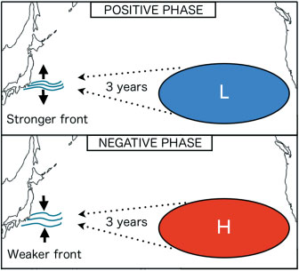
图12
Figure 12
正文所讨论的海气耦合变率潜在模态示意图。
Schematic of the potential mode of coupled ocean–atmosphere variability as discussed in the text.
本图的彩色版本可在线查看：wileyonlinelibrary.com/journal/qj。
This figure is available in colour online at wileyonlinelibrary.com/journal/qj.
海气耦合的年代际变率模态已在耦合大气海洋环流模式中（例如 Kwon and Deser, 2007），以及 Qiu et al. (2007) 采用理想化模型进行的一项受观测约束研究中得到研究，不过这些研究聚焦于 KE 区域更大尺度 SST 异常的影响，而非 KEF 本身的变率。
Coupled decadal modes of variability have been studied in coupled general circulation models (e.g. Kwon and Deser, 2007) and in an observationally constrained study using an idealised model by Qiu et al. (2007), although these studies have focussed on the impact of broader-scale SST anomalies in the KE region rather than the variability of the KEF itself.
这类研究的关键在于，KE 区域 SST 异常必须对大尺度大气环流产生影响。
Key to these type of studies is the existence of an impact of the SST anomalies in the KE region on the large-scale atmospheric circulation.
关于这一问题，此处归因于 KEF 北移和增强的四极型气压信号（即图5(a)）不同于 Frankignoul et al. (2011) 在 NCEP–NCAR† 再分析资料中推断的信号——后者作者分离出西北太平洋上的偶极结构。
With respect to this issue, the quadrupolar pressure signal attributed here to a northward shift and intensification of the KEF (i.e. Figure 5(a)) is different from that inferred by Frankignoul et al. (2011) in the NCEP–NCAR† reanalyses – these authors isolated a dipolar structure over the northwestern Pacific.
† 美国国家环境预报中心—国家大气研究中心。
† National Centres for Environmental Prediction–National Center for Atmospheric Research.
不过我们注意到，Frankignoul et al. (2011) 所考察的 SST 型态与我们的非常不同：其显示 KEF 整体均匀增暖（其图6底图），而非偶极结构（我们的图2）。
We note however that the SST pattern considered in Frankignoul et al. (2011) is very different from ours, showing a uniform warming across the KEF (their Figure 6, bottom panel) rather than a dipolar structure (our Figure 2).
风暴路径对 KEF 强度变率展现出大尺度响应这一事实，凸显了西边界流（WBCs）对决定中纬度对流层动力学的重要性。
The fact that the storm track exhibits a large-scale response to variability in strength of the KEF highlights the importance of WBCs in determining the dynamics of the midlatitude troposphere.
具体而言，本研究表明，理解 KE 的低频变率和潜在可预报性，对于理解观测到的风暴路径低频变率（例如 Chang and Fu, 2002；Nakamura et al., 2002）、东太平洋阻塞流的年代际变率（例如 Chen and Yoon, 2002），以及北美西部相关极端天气时段（例如 Knapp et al., 2004）可能特别重要。
In particular, this study suggests that understanding the low-frequency variability and potential predictability of the KE could have particular importance in understanding the observed low-frequency variability in storm tracks (e.g. Chang and Fu, 2002; Nakamura et al., 2002), decadal variability of blocking flows over the eastern Pacific (e.g. Chen and Yoon, 2002) and associated periods of extreme weather over western North America (e.g. Knapp et al., 2004).
本研究强调的机制主要依赖于风暴路径的东西向重组，因此在海盆尺度较小的北大西洋可能不那么相关。
The mechanism highlighted in our study relies primarily on an east–west reorganisation of the storm track and, as such, it might not be as relevant to the North Atlantic where the ocean basin size is smaller.
但它似乎与阿古拉斯锋下游的南大洋尤其相关，那里类似动力学可能影响澳大利亚阻塞形势的出现频率。
However, it seems particularly relevant to the Southern Ocean, downstream of the Agulhas Front, where similar dynamics might influence the prevalence of Australian blocking patterns.
致谢
Acknowledgements
致谢
Acknowledgements
本研究得益于与 Xiaoming Zhai 和 Brian Hoskins 的有益讨论。
This work has benefited from interesting discussions with Xiaoming Zhai and Brian Hoskins.
我们也感谢 Shoshiro Minobe 提出的有益意见。
We would also like to thank Shoshiro Minobe for his helpful comments.
CO’R 曾就本文早期版本与 Young-Oh Kwon、Terry Joyce 和 Hyodae Seo 进行有益讨论。
CO’R benefitted from interesting discussions with Young-Oh Kwon, Terry Joyce and Hyodae Seo on an earlier version of this work.
CO’R 获得自然环境研究委员会学生奖学金资助。
CO’R was funded by a Natural Environment Research Council studentship.
附录
Appendix
附录
Appendix
异常阻塞的解释
Interpretation of anomalous blocking
异常阻塞的解释
Interpretation of anomalous blocking
在第4节中，通过对 E 向量散度的分析，我们表明：KEF 指数正位相期间，正压瞬变涡旋强迫的方向是减弱正压西风气流，且在这些时段阻塞频率显著增加。
In section 4, through analysis of the E vector divergence, we showed that the sense of the barotropic transient eddy forcing during the positive phase of the KEF index is to reduce the westerly barotropic flow and during these periods blocking frequency is significantly increased.
这里，我们概述如何用正压阻塞的涡旋拉伸机制来恰当地解释这一结果。
Here, we outline how this result can be well interpreted in terms of the eddy-straining mechanism of barotropic blocking.
Shutts (1983) 表明，在时间平均正压涡旋涡度平方方程中，若假定涡旋 PV 通量的旋转分量在很大程度上被涡旋涡度平方平流项抵消（Marshall and Shutts, 1981; Illari and Marshall, 1983），则剩余正压 PV 通量 (v′q′)∗ 由下式确定：
Shutts (1983) showed that in the time-mean barotropic eddy enstrophy equation, assuming that the rotational component of the eddy PV flux is largely cancelled by the eddy enstrophy advection term (Marshall and Shutts, 1981; Illari and Marshall, 1983), the residual barotropic PV flux, (v′q′)∗, is determined by
（v′q′ 的时间平均）下标星号 · ∇q 的时间平均 = F′q′ 的时间平均 − r q′² 的时间平均，式（A1）。
(time mean of v′q′) with subscript asterisk · ∇(time-mean q) = time mean of F′q′ − r(time-mean q′²), equation (A1).
这里，撇号表示相对于时间平均的偏差；q = f₀ + ζ + βy 为正压 PV（其中 f₀ 为科氏参数的参考值，ζ 为相对涡度，y 为纬度，β 为行星涡度的经向梯度）；F′ 为斜压不稳定性对正压模态的强迫（其与瞬变涡旋热输送直接相关），r⁻¹ 为阻尼时间尺度。
Here primes denote deviation from the time mean, q = f₀ + ζ + βy is the barotropic PV (where f₀ is a reference value of the Coriolis parameter and ζ is the relative vorticity), y is the latitude and β the meridional planetary vorticity gradient, F′ is the forcing of the barotropic mode by baroclinic instability (which is directly related to transient eddy heat transport), and r⁻¹ is a damping time-scale.
由于强迫项 F′q′ 是正定的，斜压不稳定性强的区域充当涡旋涡度平方的源，涡旋 PV 通量为逆梯度：
Since the forcing term F′q′ is positive definite, regions where baroclinic instability is large act as sources of eddy enstrophy and the eddy PV flux is up-gradient:
（v′q′ 的时间平均）下标星号 · ∇q 的时间平均约等于 F′q′ 的时间平均，其中 F′ 的时间平均绝对值较大，式（A2）。
(time mean of v′q′) with subscript asterisk · ∇(time-mean q) is approximately the time mean of F′q′, where the absolute time mean of F′ is large, equation (A2).
相反，几乎没有斜压涡旋增长的区域是涡旋涡度平方的净汇，PV 通量必然为顺梯度：
In contrast, regions with little baroclinic eddy growth are net sinks of eddy enstrophy and the PV flux is necessarily down-gradient:
（v′q′ 的时间平均）下标星号 · ∇q 的时间平均约等于 −r q′² 的时间平均，其中 F′ 的时间平均绝对值较小，式（A3）。
(time mean of v′q′) with subscript asterisk · ∇(time-mean q) is approximately −r(time-mean q′²), where the absolute time mean of F′ is small, equation (A3).
这种顺梯度 PV 通量有助于维持阻塞型态的 PV 异常。
This down-gradient flux of PV acts to maintain the PV anomaly of the blocking pattern.
图8(b)所示东太平洋阻塞频率的差异，可按如下方式用正压模型解释（另见图A1）。
The difference in blocking frequency over the eastern Pacific shown in Figure 8(b) can be interpreted in terms of the barotropic model as follows (also Figure A1).
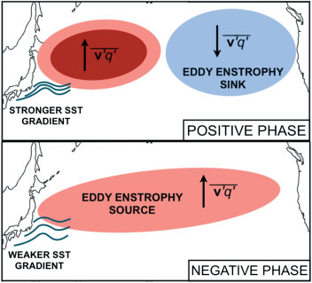
图A1
Figure A1
KEF 正、负位相中正压涡旋涡度平方源／汇及其相关正压位涡通量的示意图。
Schematic of the barotropic eddy enstrophy sources/sinks and the associated barotropic potential vorticity fluxes in the positive and negative phases of the KEF.
在正位相中，西太平洋的斜压增长增强，东太平洋的正压耗散增强。
In the positive phase, there is enhanced baroclinic growth in the western Pacific and barotropic dissipation in the eastern Pacific.
在负位相中，斜压增长区横跨太平洋，整个区域是正压涡旋涡度平方的净源（正压位涡的逆梯度通量）。
In the negative phase, the region of baroclinic growth spans the Pacific and the entire region is a net source of barotropic eddy enstrophy (up-gradient flux of barotropic potential vorticity).
这会导致增强的顺梯度正压位涡通量，其作用是增强阻塞流。
This leads to enhanced down-gradient barotropic potential vorticity fluxes which act to enhance blocking flows.
本图的彩色版本可在线查看：wileyonlinelibrary.com/journal/qj。
This figure is available in colour online at wileyonlinelibrary.com/journal/qj.
在负位相中，斜压增长增强，但局限于西太平洋区域；在到达太平洋中部时，涡旋已高度正压化（|F′| 较小），这与加速的生命周期一致（例如 Simmons and Hoskins, 1978）。
In the negative phase, there is enhanced baroclinic growth but this is confined to the western Pacific region and the eddies become highly barotropic by the time they reach the centre of the Pacific (small |F′|), consistent with an accelerated lifecycle (e.g. Simmons and Hoskins, 1978).
因此，正压耗散增加，从而东太平洋存在一个正压涡旋涡度平方的汇。
As such, there is increased barotropic dissipation, and hence a sink of barotropic eddy enstrophy in the eastern Pacific.
随之而来的顺梯度正压 PV 通量则增加阻塞型态的出现频率。
The associated down-gradient barotropic PV fluxes in turn increase the prevalence of blocking patterns.
在正位相中，斜压增长率降低，涡旋需要更长时间才会变得显著正压。
In the positive phase, the baroclinic growth rate is reduced and the eddies take a longer time to become significantly barotropic.
结果是，斜压增长区（|F′| 较大），因而也是正压涡旋涡度平方的源，横跨整个太平洋，整个区域是正压涡旋涡度平方的净源。
As a result, the region of baroclinic growth (large |F′|), and hence the source of barotropic eddy enstrophy, spans the Pacific and the entire region is a net source of barotropic eddy enstrophy.
因此，涡旋正压 PV 通量为逆梯度，从而阻止阻塞的形成。
The eddy barotropic PV flux is therefore upgradient and hence prevents the formation of blocks.
术语统一
| English | 中文译法 |
|---|---|
| Kuroshio Extension (KE) | 黑潮延伸体 |
| Kuroshio Extension Front (KEF) | 黑潮延伸体锋 |
| storm track | 风暴路径 |
| baroclinicity | 斜压性 |
| transient eddy | 瞬变涡旋 |
| eddy–mean flow interaction | 涡旋–平均流相互作用 |
| blocking | 阻塞（形势） |
| potential vorticity (PV) | 位涡 |
参考文献
参考文献条目未译入本阅读版；所有文内引文均按原文保留。请查阅随任务保存的原始 PDF。